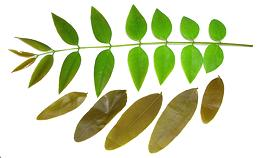
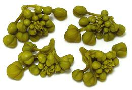

The photo is of my Gold Medallion tree, Senna leptophylla. These are from southern Brazil and are seen blooming profusely all over Southern California in early Summer. It is quite similar to the Senna siamea of Thailand, the only one used in cuisine, and Thailand is pretty much the only place it is used. In Thailand both leaves and flower buds are used in soups, curries and the like. Leaves and buds are available lightly pickled in jars here in Los Angeles. Young pods and seeds are also said to be edible, but must be boiled and the water discarded. Various parts of this tree are also used medicinally.
More on Varieties of Bean.
 These fresh leaves are from my Senna leptophylla tree, the stem of young leaves was 8-1/2 inches long. The pickled ones, Senna siamea, were purchased from a large Asian market in Los Angeles, and were from Thailand, labeled "Preserved Cassia Leaves". Ingred: water, cassia, distilled vinegar, salt, sodium benzoate.
Senna siamea leaflets are more rounded at the tip, and the leaf frond ends with a single terminal leaflet. Senna leptophylla leaflets are more pointy and the frond ends in a pair.
So, I did some experiments. After a fair amount of simmering the
Senna leptophylla were still a bit fibrous with little flavor
and not real pleasant to eat. Of course, I wasn't real impressed with the
edibility of the Thai leaves either. Surprisingly, the green leaves
taken from a single frond, colored 2 cups of simmering water the color
of strong tea, and imparted a rather pleasant tea-like flavor. It would
work rather well in soup stock, but I can't provide any real information
about possible toxicity, though sampling an ounce or so produced no ill
effects, and most, but not all, bean toxins are destroyed by cooking.

In the photo to the left are cassia bud clusters that had been packed in a
light brine. These were from Thailand, but purchased from an Indian market
in Los Angeles. The largest were 3/8 inch diameter. They had a subtle
flavor with a touch of bitterness. I lightly simmered a few from my
Senna leptophylla. They definitely were more edible than the
leaves, with a light bean-pea flavor, and the same touch of bitterness
in the aftertaste as the Thai ones.